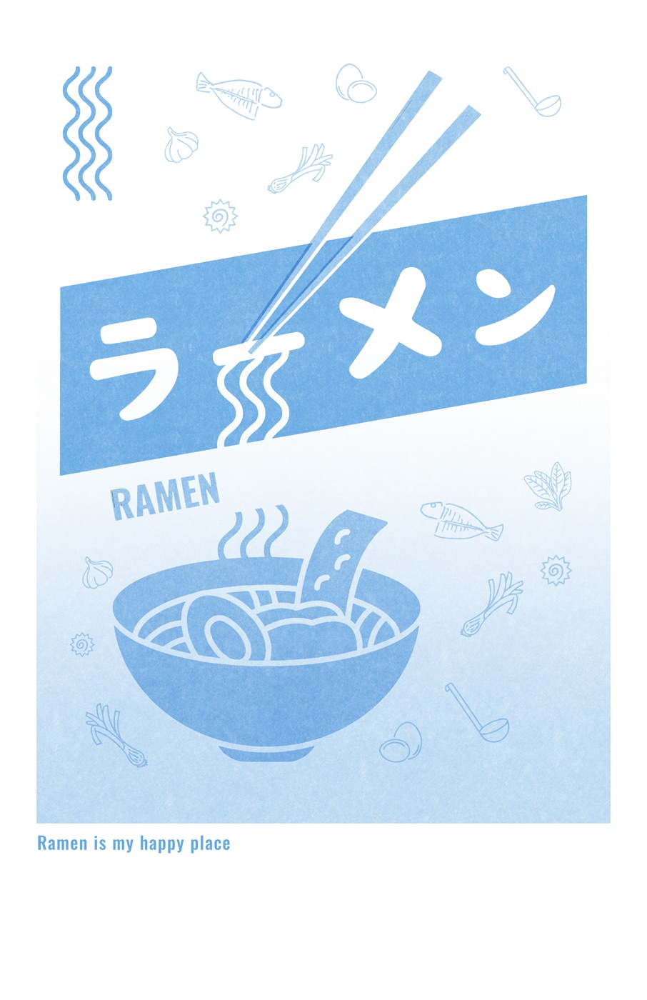
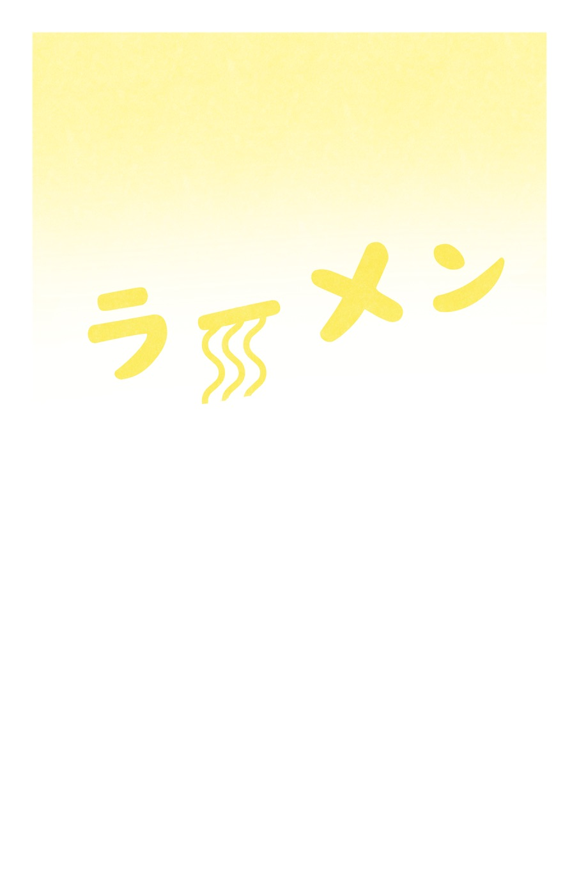
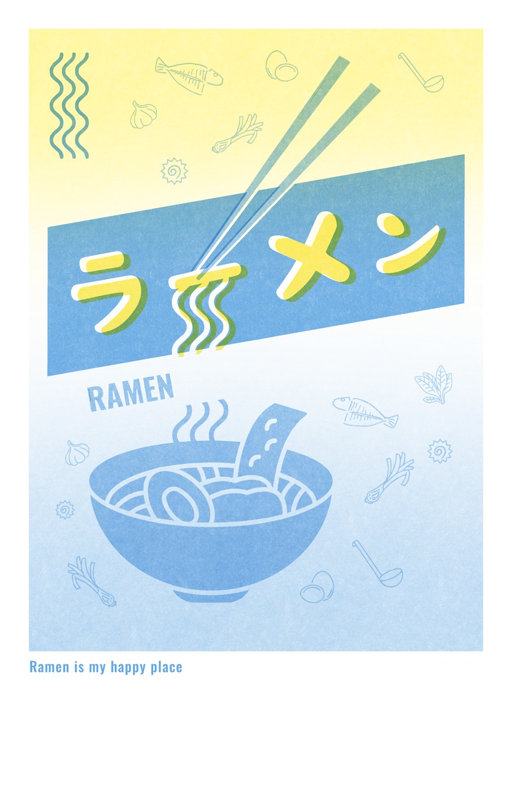
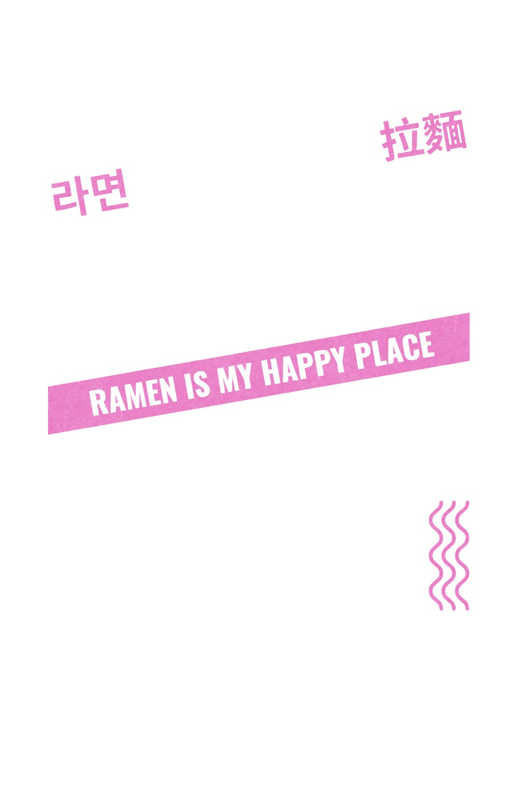
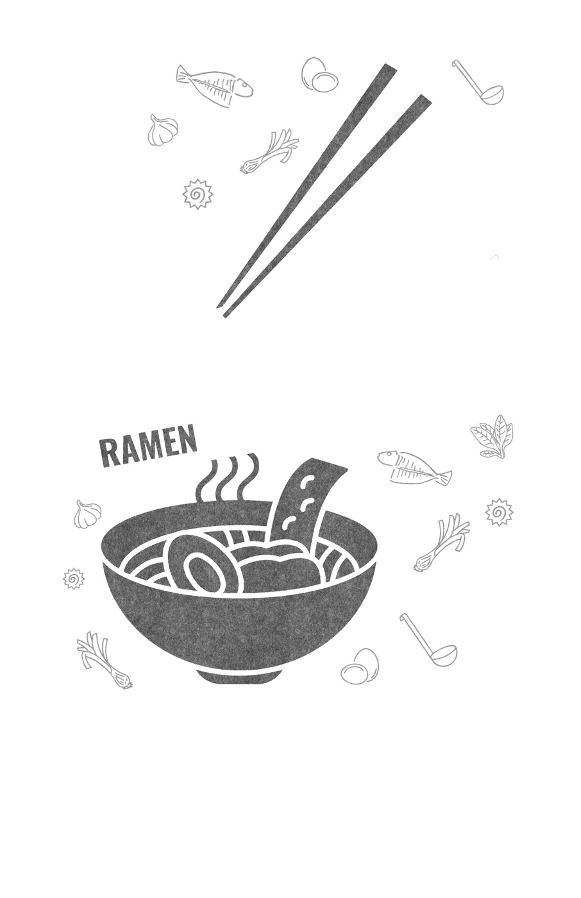
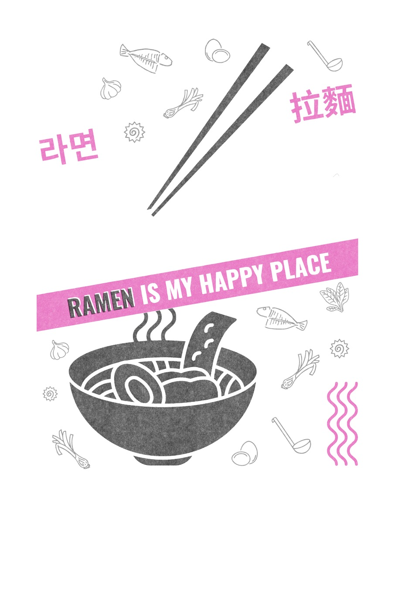
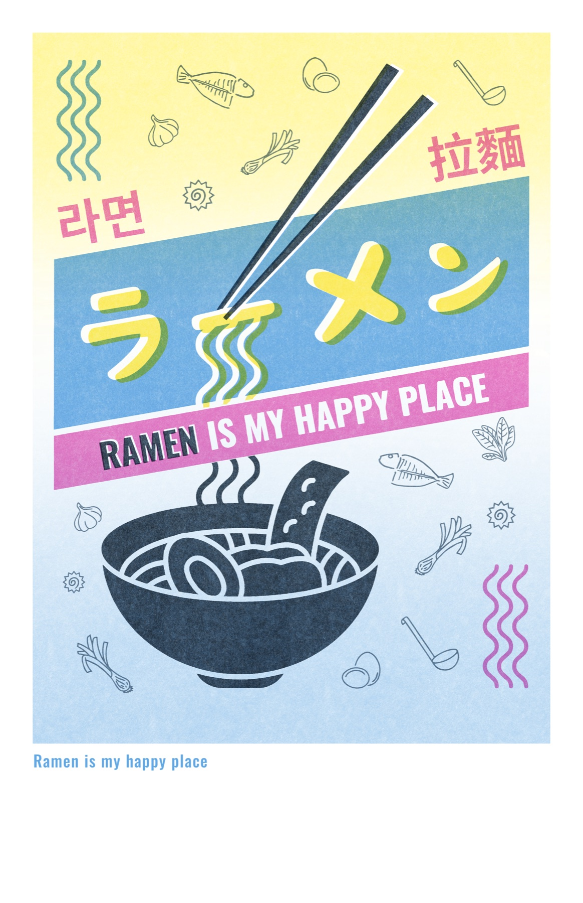
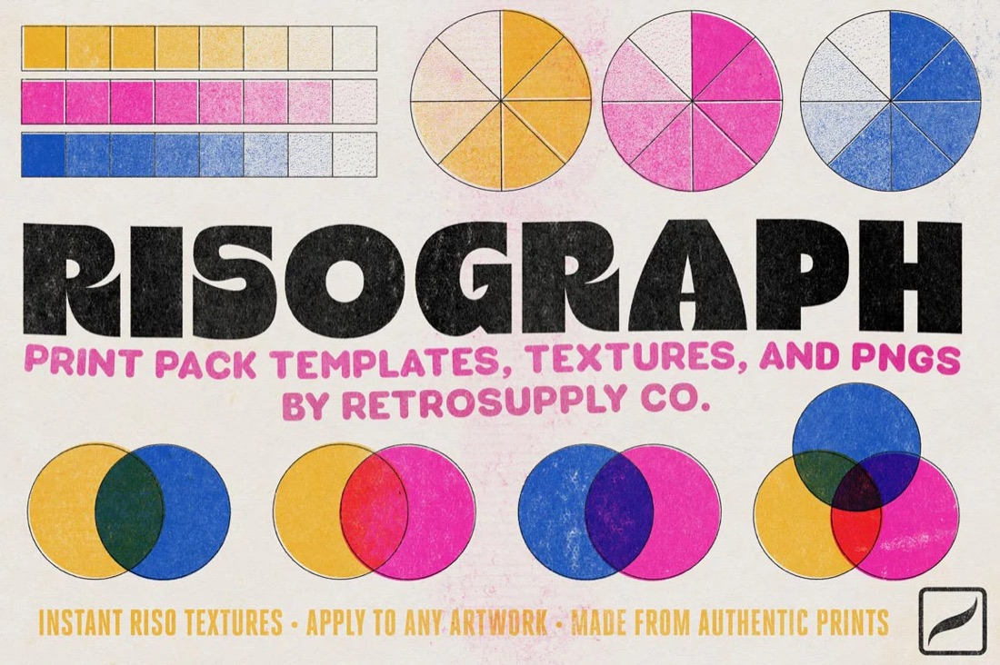

ramen riso
my first risograph print — “ramen is my happy place”, limited edition
what does “ramen is my happy place” mean? There’s something magical about the ritual of slurping noodles, savoring rich broth, and selecting each topping. It offers a small escape from the world — a moment of comfort and joy. This print celebrates the happiness ramen brings to so many people around the world: a reminder to cherish the little things in life.
what is riso? Risograph printing, often called “riso,” is an eco-friendly printing process that originated in Japan in the 1980s. Known for its vibrant colors, grainy textures, and stencil-like effects, riso is popular for art prints, zines, posters, and other creative projects.
how does it work? Risograph printers function similarly to screen printing, using a digital duplicator to create a stencil, or “master,” for each color. The master is wrapped around a drum, which rolls ink onto the paper. Each color is printed in separate layers, allowing for unique and often unexpected color combinations. After each layer is printed, the paper is fed back through the machine for another color, creating a layered effect.
Due to the nature of the process, risograph prints often have slight misalignments known as “registration errors.” These small imperfections add to their charm, giving each print a handmade, organic feel. Unlike offset printing, riso prints are rarely identical, making each piece slightly unique.
print with the first two colors



print with the second two colors



final print

